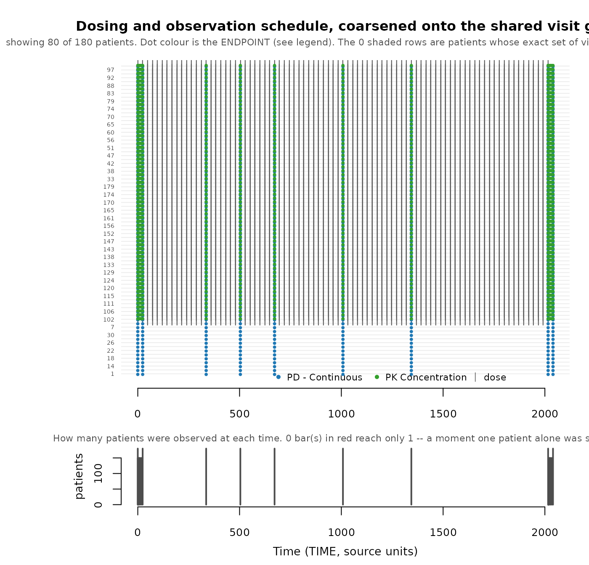

One pharmacometric (PMX) dataset taken from raw event table to synthetic event table, in the order you would actually do it. Every number below is produced by the run; nothing is quoted from a previous one.
The dataset is xgxr::case1_pkpd: 180 patients, six arms
from placebo to 300 mg, with both a pharmacokinetic (PK) concentration
endpoint and a continuous pharmacodynamic (PD) endpoint. It is a good
demonstration case because its recorded sample times are all
distinct — every patient’s observation schedule is unique before
anything is done to it — which is the condition the visit-grid machinery
exists for.
To run this on your own study, edit the two chunks under
Configuration and leave the rest alone. Every check
made along the way is collected into a scorecard at the
end, with the answer that counts as passing for each. Companion reading:
vignette("synpmx-4-methods") for why AVATAR blending is the
default method, vignette("avatar-algorithm") for what each
step does internally, and vignette("synthetic-data-checks")
for the full list of questions to ask of any synthetic dataset.
Configuration
The data, and one look at it before touching anything.
raw <- as.data.frame(
get(utils::data(list = "case1_pkpd", package = "xgxr"))
)
SEED <- 808
table(raw$NAME, raw$TRTACT)
#>
#> 10 mg 100 mg 3 mg 30 mg 300 mg Placebo
#> Dosing 2550 2550 2550 2550 2550 2550
#> PD - Continuous 270 270 270 270 270 270
#> PK Concentration 780 780 780 780 780 0The column meanings. This is the whole configuration: AVATAR blending needs no structural model, no priors, and no design — only which column plays which role. Columns not named here are dropped, which the run says out loud.
roles <- pmx_roles(
id = "ID",
time = "TIME",
dv = "LIDV",
amt = "AMT",
evid = "EVID",
cmt = "CMT",
dvid = "NAME", # which endpoint each observation row is
nominal_time = "NOMTIME", # the protocol grid; see below for why it matters
strata = c("TRTACT", "DOSE"),
covariates = "WEIGHTB", # baseline covariates, blended like everything else
keep = "STUDY" # carried through verbatim
)Two role choices are worth pausing on, because they are the ones that change the result rather than describe the data.
-
nominal_timeis the declared protocol grid. Left out, the run infers a grid and reports it as inferred. Here the study has a real one, so declare it. -
strataare the treatment arms. Declaring them keeps the arm balance and stops a 3 mg patient being blended with a 300 mg patient, but it also splits the donor pool six ways. On a small cohort that trade can go the other way; the run report is how you tell.
CENS is deliberately not declared as
cens. The column exists, but it is all zeros with no
censored records, and validate_pmx() refuses a censoring
column that never fires — see
vignette("synthetic-data-checks").
Does the source validate?
Structure first. A dataset that fails here will fail confusingly later.
report <- validate_pmx(raw, roles, strict = FALSE)
stopifnot(report$valid)
report$valid
#> [1] TRUEHow identifying is the visit schedule?
Run this before generating. Every column answers one
question — how many patients share this property with me, me
included — so 1 means nobody else.
Scored as recorded:
skeleton_uniqueness(raw, roles)Schedule-uniqueness screen. Scored on the recorded
times AS GIVEN, before any coarsening. synpmx_avatar()
coarsens first by default, so run this again with
coarsen_time = TRUE to see what the grid removes.
180 of 180 patients (100%) have an observation schedule nobody else
has: 180 from a one-off observation time, 0 from which visits they
attended. Declaring nominal_time addresses the first group;
nothing addresses the second.
Those 180 are not necessarily far apart. The typical one differs from its nearest neighbour by 42 of about 33 visit slots (range 18 to 42), where a slot is one endpoint measured at one time. A difference of one or two is a missed sample, not a different schedule – which is why the count alone is a poor guide.
This is a property of the SOURCE, and nothing in generation can lower
it. What generation controls is whether an avatar ends up wearing one of
these schedules – that is pmx_masking_report()’s “avatars
keeping their anchor’s own visit set”, which should be near 0% however
high the count above is.
| Patients whose … | n | % of cohort | Meaning |
|---|---|---|---|
| Observation schedule nobody else has | 180 | 100 | the headline: an avatar anchored here wears one real patient’s schedule |
| … a one-off observation time | 180 | 100 | sampled when nobody else was. A time grid can absorb
this: declare nominal_time
|
| … the set of visits attended | 0 | 0 | every time is shared. A missed visit, a discontinuation, or follow-up that has not reached the later visits. No grid touches this |
| Observation count nobody else has | 0 | 0 | survives any grid; the residual
flag_identifiable_subjects() looks at |
| Dosing nobody else has | 6 | 3 | dose amounts and gaps. Weight-based dosing makes this near-universal |
How crowded is each schedule (1 = nobody else has it):
| Patients sharing that schedule | Patients | % of cohort |
|---|---|---|
| 1 | 180 | 100 |
Which endpoint is doing it. A schedule is only as shared as
its least shared part.
| endpoint | patients | distinct visit sets | patients alone on theirs |
|---|---|---|---|
| PD - Continuous | 180 | 180 | 180 |
| PK Concentration | 150 | 150 | 150 |
One row per patient is in the returned data frame;
plot_pmx_schedule() draws the same cohort. Source-derived;
not releasable unless separately public or privately budgeted.
All 180 patients have an observation schedule nobody else has, and the cause is a one-off observation time rather than a one-off pattern of attendance. That distinction decides whether it is fixable: a one-off time snaps onto the protocol grid, a one-off attendance pattern does not snap onto anything.
Scored on the grid synpmx_avatar() actually generates
on:
skeleton_uniqueness(raw, roles, coarsen_time = TRUE)Schedule-uniqueness screen. Scored AFTER coarsening,
on the shared visit grid synpmx_avatar() builds. These are
the numbers a run reports.
Every patient shares their observation schedule with somebody. Nothing to do.
This is a property of the SOURCE, and nothing in generation can lower
it. What generation controls is whether an avatar ends up wearing one of
these schedules – that is pmx_masking_report()’s “avatars
keeping their anchor’s own visit set”, which should be near 0% however
high the count above is.
| Patients whose … | n | % of cohort | Meaning |
|---|---|---|---|
| Observation schedule nobody else has | 0 | 0 | the headline: an avatar anchored here wears one real patient’s schedule |
| … a one-off observation time | 0 | 0 | sampled when nobody else was. A time grid can absorb
this: declare nominal_time
|
| … the set of visits attended | 0 | 0 | every time is shared. A missed visit, a discontinuation, or follow-up that has not reached the later visits. No grid touches this |
| Observation count nobody else has | 0 | 0 | survives any grid; the residual
flag_identifiable_subjects() looks at |
| Dosing nobody else has | 0 | 0 | dose amounts and gaps. Weight-based dosing makes this near-universal |
How crowded is each schedule (1 = nobody else has it):
| Patients sharing that schedule | Patients | % of cohort |
|---|---|---|
| 30 | 30 | 17 |
| 150 | 150 | 83 |
Which endpoint is doing it. A schedule is only as shared as
its least shared part.
| endpoint | patients | distinct visit sets | patients alone on theirs |
|---|---|---|---|
| PD - Continuous | 180 | 1 | 0 |
| PK Concentration | 150 | 1 | 0 |
One row per patient is in the returned data frame;
plot_pmx_schedule() draws the same cohort. Source-derived;
not releasable unless separately public or privately budgeted.
100% to 0%. Coarsening onto NOMTIME collapses 180
distinct schedules into two — one for the 150 patients with PK sampling,
one for the 30 placebo patients without. This is the best case for the
mechanism, and it is why declaring nominal_time is worth
the effort of finding the column.
plot_pmx_schedule(raw, roles)
Vertical stripes mean patients share visits; a ragged right edge is follow-up ending. In the lower panel a bar of height one is a moment only one patient was ever sampled at — exactly what would be copied onto an avatar — drawn in red.
Synthesize
synthetic <- synpmx_avatar(raw, roles, seed = SEED)
#> synpmx_avatar(): dropped 9 undeclared column(s): TIMEUNIT, EVENTU, CENS, eff0, PROFDAY, PROFTIME, CYCLE, PART, IPRED.
#> Declare a column in `keep` to carry it through verbatim.
stopifnot(validate_pmx(synthetic, roles)$valid)
c(rows = nrow(synthetic),
subjects = length(unique(synthetic$ID)),
shared_ids = length(intersect(synthetic$ID, raw$ID)))
#> rows subjects shared_ids
#> 20820 180 0Same size as the source, and no identifier is shared with it.
What the masking mechanisms did
Each row carries the sentence that says what its number means, so this section is deliberately short.
pmx_masking_report(synthetic, raw, roles)| Quantity | Value | What it means |
|---|---|---|
| Who was available to build on | ||
| Patients in the source | 180 | |
| excluded as structurally extreme | 0 (0%) |
screen: follow-up or dose count over twice
the cohort’s 90th percentile |
| excluded, route arm too small | 0 (0%) |
on_donor_shortfall: a route arm holding
fewer than k + 1 patients |
| left to anchor avatars on | 180 (100%) | an excluded patient still contributes as a donor |
| Avatars built | 180 | cohort size is unaffected by the exclusions above |
| Donor pools: who may be blended with whom | ||
| Administration routes | 1 | oral, infusion, and so on. Donors are NEVER blended across a route, so each is a separate pool |
| Dose/schedule groups | 6 | patients with an identical dose pattern and endpoint set. Donors are looked for here first; many small groups means the search falls back to the wider route pool |
| How much of one real patient reaches one avatar | ||
| Donor floor, k | 5 | real patients blended into each avatar |
| Largest share one donor may hold | 0.5 | max_donor_weight |
| that cap actually bound on | 127 of 180 (71%) | of avatars. Near 100% means the cap, not distance, is setting the weights |
| Effective donors per avatar, mean | 2.89 | 1 / sum(w^2). This, not k, is how many patients an avatar is really made of |
| Visit schedule: WHEN patients were observed | ||
| Visit grid used | nominal | every visit was snapped to the declared
nominal_time, which is the protocol grid. This is the
reliable case |
| Unique observation schedules, before coarsening | 180 (100%) | patients whose list of observation times nobody else shares |
| Unique observation schedules, after coarsening | 0 (0%) | the count that matters: an avatar copies its anchor’s times verbatim |
| because of a one-off observation time | 0 (0%) | sampled when nobody else was. Declaring
nominal_time is the fix |
| because of which visits they attended | 0 (0%) | every time is shared. The visits themselves are missing – a missed visit, a discontinuation, or follow-up that has not reached them – and no grid can fix that |
| Visit sets: WHICH of those visits each patient attended | ||
| Distinct visit sets in the source | 6 | a visit set is which of the shared grid visits one patient actually had |
| held by fewer than 2 patients, so not reused | 0 (0%) |
min_pattern_share is that threshold. These
visit sets are lost, not approximated |
| real patients holding those | 0 (0%) | those patients are NOT removed – they still anchor avatars and still act as donors. Only their particular pattern of absences stops being copied |
| Avatars given a visit set from the pool | 180 of 180 (100%) | drawn from the sets that cleared the threshold, or built from their shape – never from their own anchor alone |
| of those, misses placed fresh | 0 of 180 (0%) | the kind of missingness was reused; exactly which visits were missed was invented |
| of those, miss count moved | 0 of 180 (0%) | no arrangement at the wanted number of missing visits was free, so the count moved by a visit or two. Misses at the END of a record are the case that forces it, because for a given count there is exactly one such arrangement |
| of those, a rare set swapped for a shared one | 0 of 180 (0%) | the anchor’s own set was held by nobody else and no arrangement was free, so the group’s most widely held set was used instead – less faithful to that avatar, and it discloses nothing |
| of those, moved to a different anchor | 0 of 180 (0%) | the first anchor’s own set was shared by nobody and nothing legal could be placed, so this avatar was anchored elsewhere. Every source patient stays a donor and stays available to anchor others |
| Avatars keeping their anchor’s own visit set | 0 of 180 (0%) | not a problem in itself: if several real patients share that set, copying it identifies nobody. Only the next row is a disclosure |
| Avatars carrying a visit set nobody else shares | 0 (0%) | this is the row that must be 0%. That pattern of which visits have observations belongs to one real patient. It is non-zero only when the schedule group has no shared set to substitute; the run alerts when it happens |
| of those, dosing re-truncated | 0 of 180 (0%) | the anchor stopped dosing at a depth nobody else used, so the avatar stops at a different one – shared, or used by nobody. Truncating a schedule to a real dose time is protocol-valid in a way that moving dose times is not |
| Distinct dose schedules in the source | 2 | |
| represented in the synthetic cohort | 2 (100%) | a regimen only one patient received cannot be given to an avatar without pointing at them, so it is not represented at all. This is the cost of the guarantee below, and on a small cohort it is unavoidable rather than a setting to tune |
| Avatars carrying a dose schedule nobody else shares | 0 (0%) | must also be 0%. Dose events are copied from the anchor verbatim, so patients whose dose times nobody shares are not built upon. Non-zero only when EVERY patient is in that position, which individualised dosing can cause |
| Dose | ||
| Amounts recomputed from a covariate | no | the 5 distinct dose amounts are not a fixed multiple of any declared covariate: WEIGHTB (ratios do not cluster) |
so amt is copied verbatim |
from the anchor | each avatar’s implied dose per kg is therefore its
anchor’s, not its own, and the amount still encodes one real patient’s
covariate. Declare dose_covariate if this study is weight-
or BSA-based |
Four rows carry the verdict, and on this run all four are clean.
- Avatars carrying a visit set nobody else shares — 0%. This is the row that must be zero. A non-zero value means some avatar wears one real patient’s pattern of missed visits.
- Avatars carrying a dose schedule nobody else shares — 0%. The same guarantee for dosing, which is copied from the anchor verbatim.
- Visit sets held by fewer than 2 patients, so not reused — 0 of 6. This is where the fidelity cost would show, and here there is none: no real pattern of absences had to be discarded to get the two rows above to zero.
-
Effective donors per avatar — about 2.9, against a
floor of
k = 5. This is the honest number:kis how many patients were blended,1 / sum(w^2)is how many of them actually mattered. The cap binds on 71% of avatars, somax_donor_weightis doing real work rather than sitting unused.
One row is a genuine limitation of this run: amounts
recomputed from a covariate — no. The five dose levels are not
a fixed multiple of WEIGHTB, so AMT is copied
from the anchor and each avatar’s implied mg/kg is its anchor’s rather
than its own. For a weight- or body-surface-area-based study, declare
dose_covariate and the report will say it succeeded.
Do the values line up?
Ranges and shapes, source against synthetic. These will not match exactly, and they are not meant to: blending averages, so it shrinks spread.
compare_pmx_distributions(raw, synthetic, roles)| variable | dataset | n | n_subjects | mean | sd | min | q25 | median | q75 | max |
|---|---|---|---|---|---|---|---|---|---|---|
| PD - Continuous | source | 1620 | 180 | 134.9000 | 237.7000 | -621.00000 | -21.59000 | 123.20000 | 283.1000 | 936.100 |
| PD - Continuous | synthetic | 1620 | 180 | 132.0000 | 161.7000 | -360.80000 | 20.00000 | 122.80000 | 231.1000 | 741.600 |
| PK Concentration | source | 3600 | 150 | 0.3600 | 0.7371 | 0.05000 | 0.05000 | 0.06338 | 0.2626 | 6.996 |
| PK Concentration | synthetic | 3600 | 150 | 0.3015 | 0.5826 | 0.01854 | 0.04889 | 0.07093 | 0.2249 | 5.224 |
| variable | dataset | n | mean | sd | min | q25 | median | q75 | max |
|---|---|---|---|---|---|---|---|---|---|
| WEIGHTB | source | 180 | 115.9 | 20.53 | 80.02 | 98.02 | 117.0 | 133.4 | 149.6 |
| WEIGHTB | synthetic | 180 | 117.6 | 14.13 | 88.27 | 105.60 | 118.3 | 129.3 | 143.9 |
Medians track closely on both endpoints. The standard deviations are visibly smaller in the synthetic cohort — for the PD endpoint and for baseline weight alike — which is blending doing exactly what blending does. Plan for it: this data is for exercising software, not for estimating a variance component.
Is any avatar too close to a real patient?
Everything above concerns structure. This measures the values.
prox <- compare_pmx_proximity(raw, synthetic, roles)
proxNearest-neighbour proximity check. - Question: is a synthetic patient closer to a real patient than real patients are to each other? - Measured 0.511, on a scale where 0.5 means ‘no closer’ and is the target; 0 would mean every synthetic patient is glued to a real one. - Expected 0.415 to 0.571 if nothing were wrong. That interval is not assumed – it is the same statistic run 50 times on two halves of the real cohort, 90 patients per half, which is also how many synthetic patients were compared. - Verdict: Nothing detected. The value sits inside the null interval, which at this cohort size is wide – read it as ‘no blatant leak’, never as ‘no leak’. - For context, distance to the nearest neighbour (5th percentile, so the closest pairs): synthetic-to-real 1.163 versus real-to-real 1.451. These are only comparable to each other; the units are PCA profile space.
Source-derived; not releasable unless separately public or privately budgeted.
Read the two numbers together. 0.5 is the target rather
than the maximum: it means a synthetic patient is no more like a real
patient than one real patient is like another. The expected interval is
not assumed — it is the same statistic recomputed on halves of the real
cohort, so small-sample artefacts cancel. Landing inside it means
nothing was detected, never that nothing is there.
Post-generation plausibility screen
flag_identifiable_subjects() scores each
synthetic patient on follow-up time, dose count, dose
magnitude, and peak dependent variable, and flags robust outliers. It is
a plausibility check, not a masking step: a conspicuous blended value
identifies nobody, because it belongs to nobody.
flagged <- flag_identifiable_subjects(synthetic, roles)
sum(flagged$flagged)
#> [1] 1
knitr::kable(flagged[flagged$flagged, ])| subject_id | follow_up_time | n_doses | max_dose | max_dv | outlier_axes | flagged |
|---|---|---|---|---|---|---|
| 283 | 2037.782 | 85 | 10 | 255.4064 | follow-up time | TRUE |
Look at what it flags before acting on it. On a cohort with two
clearly different groups it will flag the split rather than a leak.
remediate_identifiable_subjects() will truncate, drop, or
replace what it returns.
Source against synthetic
library(ggplot2)
both <- rbind(
cbind(raw[, names(synthetic)], DATA = "source"),
cbind(synthetic, DATA = "synthetic")
)
obs <- both[both$EVID == 0 & !is.na(both$LIDV), ]
obs$TRTACT <- factor(obs$TRTACT,
levels = c("Placebo", "3 mg", "10 mg", "30 mg",
"100 mg", "300 mg"))
arms <- c(source = "grey30", synthetic = "#C1272D")The day-1 concentration profile, by arm, on a log scale:
ggplot(obs[obs$NAME == "PK Concentration" & obs$TIME <= 24, ],
aes(TIME, LIDV, group = ID, colour = DATA)) +
geom_line(alpha = 0.4) +
facet_wrap(~TRTACT, nrow = 1) +
scale_y_log10() +
scale_colour_manual(values = arms) +
labs(x = "Time (hours)", y = "PK concentration", colour = NULL) +
theme_bw() +
theme(legend.position = "top")
Dose ordering, absorption, and elimination all survive, and the avatars sit inside the source cloud rather than beside it. Where they visibly differ is at the edges of each arm — the most extreme source profiles have no synthetic counterpart, which is the shrinkage again.
The full-duration pharmacodynamic response:
ggplot(obs[obs$NAME == "PD - Continuous", ],
aes(TIME, LIDV, group = ID, colour = DATA)) +
geom_line(alpha = 0.35) +
facet_wrap(~TRTACT, nrow = 1) +
scale_colour_manual(values = arms) +
labs(x = "Time (hours)", y = "PD (continuous)", colour = NULL) +
theme_bw() +
theme(legend.position = "top")
The dose-ordered separation between placebo and 300 mg is preserved;
the red band is narrower than the grey one in every arm. Identifiers are
disjoint by construction, so grouping on ID never joins a
real patient’s line to an avatar’s.
The scorecard
Every check above, with its answer and whether that answer passes.
This is the table from vignette("synthetic-data-checks")
filled in by this run — the point of collecting it is that the pass
criteria are otherwise scattered through the prose above, and deciding
whether to ship a dataset should not require rereading the document.
Nothing here is an exported helper. It is about forty lines of ordinary R against the run report and the two tables, and it is written out rather than hidden so you can lift it into your own study and change what it asks.
settings <- attr(synthetic, "pmx_settings")
# One row per check. `ok = NA` means the check has no pass mark and has to be
# read -- which is a real answer, not a missing one.
row <- function(check, question, reads, result, ok = NA) {
data.frame(
check = check, question = question, reads = reads, result = result,
verdict = if (isTRUE(ok)) "pass" else if (isFALSE(ok)) "FAIL" else "review",
stringsAsFactors = FALSE
)
}
subjects <- function(data) length(unique(data[[roles$id]]))
# Endpoints are the `dvid` values carried by *observation* rows. This study's
# NAME column also has a "Dosing" level on its dose rows, which is not an
# endpoint and would inflate the count.
endpoints <- function(data) {
observed <- as.character(data[[roles$evid]]) %in% c("0", "0.0")
sort(unique(as.character(data[[roles$dvid]][observed])))
}
per_patient <- function(data, which) {
events <- !as.character(data[[roles$evid]]) %in% c("0", "0.0")
rows <- if (which == "dose") sum(events) else sum(!events)
round(rows / subjects(data), 1)
}
# Each subject's sorted observation times as one string: two subjects share a
# string only if their schedules are identical.
time_vectors <- function(data) {
observed <- data[as.character(data[[roles$evid]]) %in% c("0", "0.0"), ]
tapply(as.numeric(observed[[roles$time]]),
as.character(observed[[roles$id]]),
function(times) paste(sort(times), collapse = ","))
}
# One baseline value per subject, as character so a factor cannot collapse to
# its integer codes.
holders <- function(data, column) {
as.character(tapply(as.character(data[[column]]),
as.character(data[[roles$id]]),
function(x) x[1]))
}
# Of the levels that reached the output, how many source patients held the
# rarest one. This is scorecard row B5, by hand, over strata and any
# non-numeric covariate.
categorical <- c(roles$strata, roles$covariates)
categorical <- categorical[vapply(categorical,
function(v) !is.numeric(raw[[v]]),
logical(1))]
rarest_level <- min(vapply(categorical, function(column) {
source_holders <- holders(raw, column)
present <- intersect(unique(holders(synthetic, column)),
unique(source_holders))
min(as.integer(table(factor(source_holders, levels = present))))
}, integer(1)))
arm_size <- function(data) {
first <- !duplicated(as.character(data[[roles$id]]))
table(as.character(data[[roles$strata[1]]])[first])
}
source_arms <- arm_size(raw)
synth_arms <- arm_size(synthetic)[names(source_arms)]
arms_matched <- sum(source_arms == synth_arms)
copies <- length(intersect(time_vectors(raw), time_vectors(synthetic)))
inside_null <- prox$adversarial_accuracy >= prox$null_lower &&
prox$adversarial_accuracy <= prox$null_upper
card <- rbind(
row("A1", "Synthetic table is a legal PMX dataset", "synthetic",
as.character(validate_pmx(synthetic, roles)$valid),
validate_pmx(synthetic, roles)$valid),
row("A2", "Source is legal under the declared roles", "source",
as.character(report$valid), report$valid),
row("A3", "Every endpoint survived", "both",
paste(length(endpoints(synthetic)), "of", length(endpoints(raw))),
setequal(endpoints(raw), endpoints(synthetic))),
row("A4", "Cohort size survived", "both",
paste(subjects(raw), "->", subjects(synthetic)),
subjects(raw) == subjects(synthetic)),
row("A5", "Observations per patient", "both",
paste(per_patient(raw, "obs"), "->", per_patient(synthetic, "obs"))),
row("A5", "Doses per patient", "both",
paste(per_patient(raw, "dose"), "->", per_patient(synthetic, "dose"))),
row("B1a", "Avatars wearing one real patient's visit set", "run report",
settings$identifying_visit_sets, settings$identifying_visit_sets == 0),
row("B1b", "Avatars wearing one real patient's dose schedule", "run report",
settings$identifying_dose_schedules,
settings$identifying_dose_schedules == 0),
row("B2", "Synthetic patients unusual within their own arm", "synthetic",
paste(sum(flagged$flagged), "of", nrow(flagged))),
row("B3", "Adversarial accuracy inside its null interval", "both",
sprintf("%.3f in [%.3f, %.3f]", prox$adversarial_accuracy,
prox$null_lower, prox$null_upper),
inside_null),
row("B4", "Generated time vectors copying a real one", "both",
copies, copies == 0),
row("B5", "Source patients holding the rarest exported level", "both",
paste(rarest_level, "(floor", paste0(settings$min_pattern_share, ")")),
rarest_level >= settings$min_pattern_share),
row("C3", "Arms keeping their source size", "both",
paste(arms_matched, "of", length(source_arms)),
arms_matched == length(source_arms)),
row("C4", "Dose regimens represented", "both",
paste(settings$dose_regimens_represented, "of",
settings$dose_regimens_source)),
row("D2", "Effective donors per avatar", "run report",
paste(round(settings$mean_effective_donors, 1), "of k =", settings$k))
)
knitr::kable(card, row.names = FALSE)| check | question | reads | result | verdict |
|---|---|---|---|---|
| A1 | Synthetic table is a legal PMX dataset | synthetic | TRUE | pass |
| A2 | Source is legal under the declared roles | source | TRUE | pass |
| A3 | Every endpoint survived | both | 2 of 2 | pass |
| A4 | Cohort size survived | both | 180 -> 180 | pass |
| A5 | Observations per patient | both | 30.7 -> 30.7 | review |
| A5 | Doses per patient | both | 85 -> 85 | review |
| B1a | Avatars wearing one real patient’s visit set | run report | 0 | pass |
| B1b | Avatars wearing one real patient’s dose schedule | run report | 0 | pass |
| B2 | Synthetic patients unusual within their own arm | synthetic | 1 of 180 | review |
| B3 | Adversarial accuracy inside its null interval | both | 0.511 in [0.415, 0.571] | pass |
| B4 | Generated time vectors copying a real one | both | 0 | pass |
| B5 | Source patients holding the rarest exported level | both | 30 (floor 2) | pass |
| C3 | Arms keeping their source size | both | 6 of 6 | pass |
| C4 | Dose regimens represented | both | 2 of 2 | review |
| D2 | Effective donors per avatar | run report | 2.9 of k = 5 | review |
Three things to notice about how this reads.
review is not a soft pass.
Five rows have no pass mark because no threshold would be honest. Doses
per patient is the clearest: on this study it is unchanged, and on a
study with individualised dosing it can halve while every guarantee
above it still reads 0. A checklist that scored that row would have to
pick a number, and any number picked would be wrong on some dataset.
The reads column decides where the table can
go. Every row marked source or both
was computed from real patient data and inherits its handling
obligations, so the filled-in scorecard is itself restricted output.
Only the synthetic and run report rows can
travel with the data.
B5 is the row doing the least work. It reports the
rarest categorical level that reached the output, which on a six-arm
study with thirty patients per arm is a comfortable 30. On a study with
a two-patient stratum it would read 2, and that is the whole finding —
but nothing in the package computes it, so the lines above are what you
have to write. See vignette("synthetic-data-checks"),
section B5.
What this run does and does not license
The output is fit for software development, package testing, reproducible examples, teaching, and giving a coding agent something realistic to work against. It reproduces the structure of a clinical trial event table: dosing histories, multiple endpoints, arm balance, and the visit schedule.
It is not fit for estimating population parameters, and this run showed both reasons why — variance is shrunk by blending, and dose amounts were not rescaled to each avatar’s own weight.
Two of the tables here (compare_pmx_distributions() and
compare_pmx_proximity()) are computed from the source data
and are labelled restricted in their own output. They belong in the
trusted environment with the real data, not in a document that leaves
it.